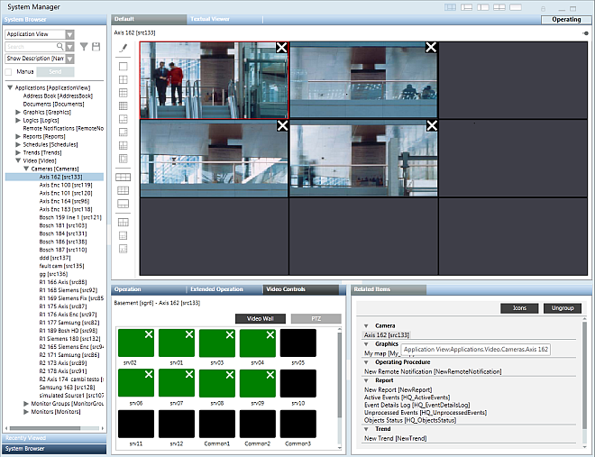
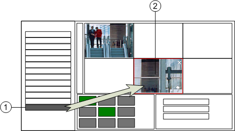
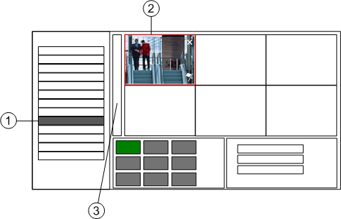
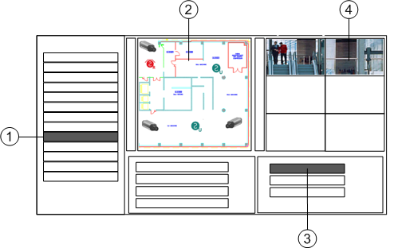
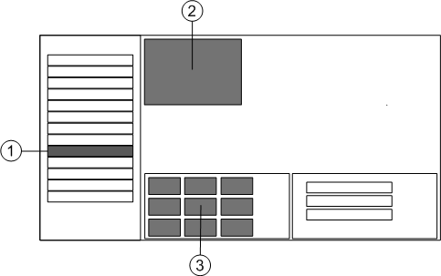
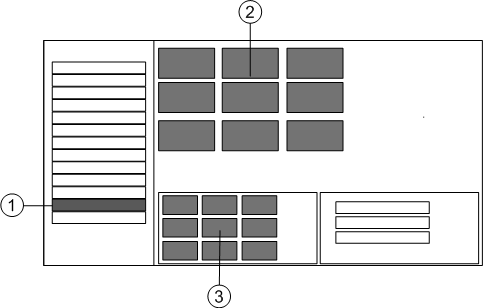

Displaying Video
This section provides instructions for displaying video on your Desigo CC station. For background information see Video View Reference.
Prerequisites
- Your Desigo CC station is configured to display video.
- System Manager is in Operating mode.
- System Browser is in Application View.

The new camera connections you make to managed monitors persist across sessions. These changes will also affect any other stations that use the same monitors in their video view.
You can also use any unassigned frames (unmanaged monitors) in the video view layout to connect more cameras. However these additional connections will not be retained after you leave the video view.
Display the Video View of your Station
The video view comprises the group of managed monitors assigned to your station.
- In System Browser select Applications > Video.
- The video view displays. The monitor images of your previous session are retained.
- Use the toolbar icons to adjust the layout as needed, so that all the managed monitors are visible.
NOTE: If the chosen layout exceeds the number of managed monitors your station has, unassigned frames are marked with .
.

Alternative Method
- To display the video view in the Secondary pane: Right-click Applications > Video and select Send to the Secondary pane.
Connect Video View Monitors to Cameras
- In System Browser select Applications > Video
- Expand Applications > Video > Cameras, and drag-and-drop the desired [camera] onto a monitor in the video view.
- Images from the selected camera display in the monitor. The connection will persist until you change it again.
- To disconnect a monitor from its camera, select the monitor in the video view and click X in its top right corner.

Display Images from a Camera in the First Monitor
You can quickly display images from a specific camera in the top left monitor of the video view.
- In System Browser select Applications > Video > Cameras > [camera].
- The video view displays in the Primary pane, with the first (top-left) monitor connected to the selected camera. Since this is a managed monitor, the connection will persist until you change it again.

Alternative Method
- To perform this same action in the Secondary pane: Right-click the [camera] and select Send to the Secondary pane.
Display Images from a Camera Group
You can quickly populate your video view with images from a group of cameras.
- In System Browser select Applications > Video > Camera Groups > [camera group].
- The video view displays in the Primary pane. Starting from the first monitor, images from the camera group populate the video view as far as the number of monitors you have can accommodate them.
NOTE: The new camera connections you make here to managed monitors persist across sessions.
Alternative Methods
- To perform this same action in the Secondary pane: Right-click the [camera group] and select Send to the Secondary pane.
- You can also drag-and-drop a [camera group] into a specific monitor, to populate the video view only starting from there. Any unaffected monitors retain their previous camera connections.
Display a Video Sequence
Video sequences allow you to cycle through images from different cameras on one or more monitors.
- In System Browser, select Applications > Video > Sequences > [sequence].
- Images from the sequence populate the video view, starting from the first (top-left) monitor. Monitors occupied by the sequence are marked with a
 or
or  icon, visible when you click the monitor. Occupied monitors cycle through the different cameras at the programmed sequence intervals. While monitors remain connected to the sequence, you cannot use them for other purposes.
icon, visible when you click the monitor. Occupied monitors cycle through the different cameras at the programmed sequence intervals. While monitors remain connected to the sequence, you cannot use them for other purposes. - To stop the sequence, select one of the monitors occupied by the sequence and click or .
- The monitors are disconnected from the sequence.
Alternative Method
- You can also drag-and-drop a sequence onto a specific monitor, to populate the video view only starting from there. Any unaffected monitors retain their previous camera connections.
Control a PTZ Camera
You can adjust the PTZ (pan, tilt, zoom) settings of a video camera.
- In System Browser, select Applications > Video.
- The video view of your station displays.
- In the video view, click the monitor where the PTZ camera images display.
NOTE: When you select a monitor, the Operation tab displays the name of the connected camera. - In the Video Controls tab of the Contextual pane, click PTZ.
- The PTZ panel displays. For details see PTZ Panel
- To manually pan the camera to a new position, click one of the 8 panning buttons. Click to start panning, and keep the mouse button pressed until the required position is reached.
- To manually adjust the Zoom, use the corresponding + and – buttons.
- To reach one of the predefined presets (position and lens settings), you can:
- Click Home to select preset 1
- Click one of the six Px buttons to select presets 1 to 6
- Open the preset drop-down list to select any of the configured presets
Display the Video Associated with an Object
You can check the video images related to a particular object—for example, the surveillance cameras associated to a building zone.
- An object exists that is associated to video sources.
- In System Browser, locate the object with associated video sources.
- Click the object in the navigation tree to select it.
- Links to one or more associated [video cameras] display in Related Items.
- In Related Items, click a [video camera] link.
- The video view displays in the Secondary pane, with the images from the selected camera in the first monitor.
Display Video Images from a Graphic
You can view the video images related to a floor plan graphic.
- A floor plan graphic exists that includes one or more symbols representing video cameras or objects with an associated video camera.
- In System Browser, select Applications > Graphics > [graphic].
- In the graphic, click the symbol of a video camera or of an object with an associated video camera.
- One or more links to [video cameras] display in Related Items.
- In Related Items, click a [video camera] link.
- The video view displays in the Secondary pane, with images from the selected camera in the first monitor.

Display a Monitor or Monitor Group
Do this procedure to display the video streams of any monitor or monitor group configured in the Desigo CC management platform–even if it is not assigned to your station.
- In System Browser, do one of the following:
- Select Applications > Video > Monitor Groups > [monitor group].
- Select Applications > Video > Monitors > [monitor].
- The Default tab displays the video images of the selected monitor or monitor group.
NOTE: To perform this same action in the Secondary pane, right-click a [monitor] or [monitor group] and select Send to Secondary pane. 

- (Optional) If you selected a monitor group, use the toolbar controls to adjust the layout so that all the monitors are visible.
- The new layout is applied to the monitor group and will be retained the next time that same monitor group is selected—whether from your station or from any other station.
NOTE: The layout set for the monitor group does not affect the layout of any station’s video view. It is only applied when the monitor group is selected directly.
Maximize a Monitor
You can temporarily maximize a particular monitor to get a better view of its images. This works for any managed monitor, in System Manager as well as in Assisted or Investigative Treatment.
- A monitor is displaying video streams that you want to examine more closely.
- Double-click on the monitor that you want to enlarge.
- The monitor is maximized so that it occupies the entire video layout.
- To restore the monitor back to its original size, double-click it again.
- The video layout appears as it did before.
NOTE: Maximizing with a double click is temporary action that does not change the currently set layout. If you navigate away from the tab or selection after maximizing a monitor, the original layout is automatically restored.